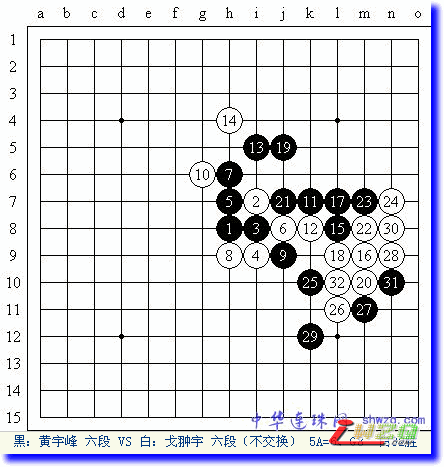
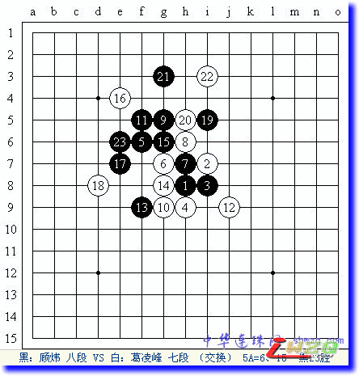

戈宇获上海云月赛冠军 吴杰葛凌峰分居二三
首页
五子棋新闻
#1 戈宇获上海云月赛冠军 吴杰葛凌峰分居二三 作者：有志青年 发表时间：2008-9-7 21:03:46
（上海消息 通讯员：阿彪）9月6日，上海五子棋第15届小棋战“云月赛”开战，包括6位高段棋手在内的16名选手参赛。 由于对高段棋手设置了5手3打规则，因此比赛中出现了不少有趣的变化。首轮的亮点一是今年以来久未参赛的吴杰三段重返赛场，执黑在30分钟内硬是依靠现场计算，以一路唯一的杀法力克葛凌峰七段；二是张轶峰三段也同样依靠深入的计算力，抓住08年上海联赛A组冠军蔡力捷五段的破绽，执白一路攻击取胜。比赛进行的非常激烈，到第4轮，顾炜八段和戈宇六段一路过关斩将，同样以连胜3局的成绩相遇。对局中，顾炜执黑抓住戈宇的子力缺陷，于11手就奠定了胜势，结果由于误算多冲了一步四，最终输掉了眼看就要到手的胜利。而张轶峰也在上一轮速败顾炜的情况下，超时负于黄宇峰六段。最后1轮，戈宇力拼黄宇峰，顾炜则又同老对手葛凌峰相遇。最终，戈宇利用黄宇峰的一步随手觅得良机，最终执白非常漂亮的抓了对手一个“四.四”禁手，以5连胜的全胜战绩获得冠军。而葛凌峰则同顾炜自序盘起就进入未知局面火拼，最终依靠精湛的算路取胜。由于他和吴杰同样获得4胜1负的成绩，大分、小分、破同分全部一样，最后只能依靠直胜决定名次，这样吴杰、葛凌峰分别获得第二、三名。 

赛后，高段棋手们认为云月在三打的情况对黑棋还是比较有利，但是由于平常研究不多，所以会出现很多未知的局面，这样也就产生了许多有趣的变化，赛后要很好的总结。
比赛期间，俞满江六段、顾伟国五段、许斌三段等棋手和部分爱好者前来观摩。
#2 Re:戈宇获上海云月赛冠军 吴杰葛凌峰分居二三 作者：我爱五子棋伯园 发表时间：2008-10-15 8:44:38
支持好贴，希望把继续